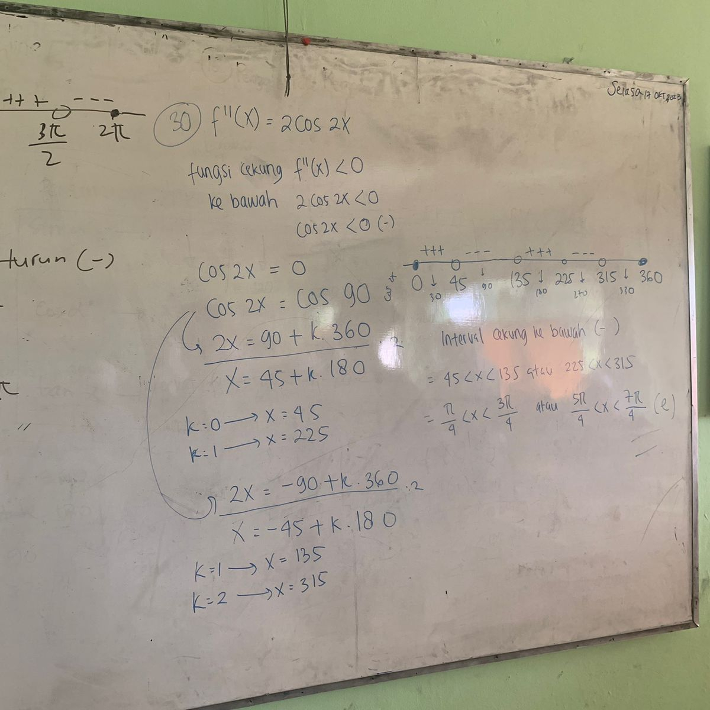
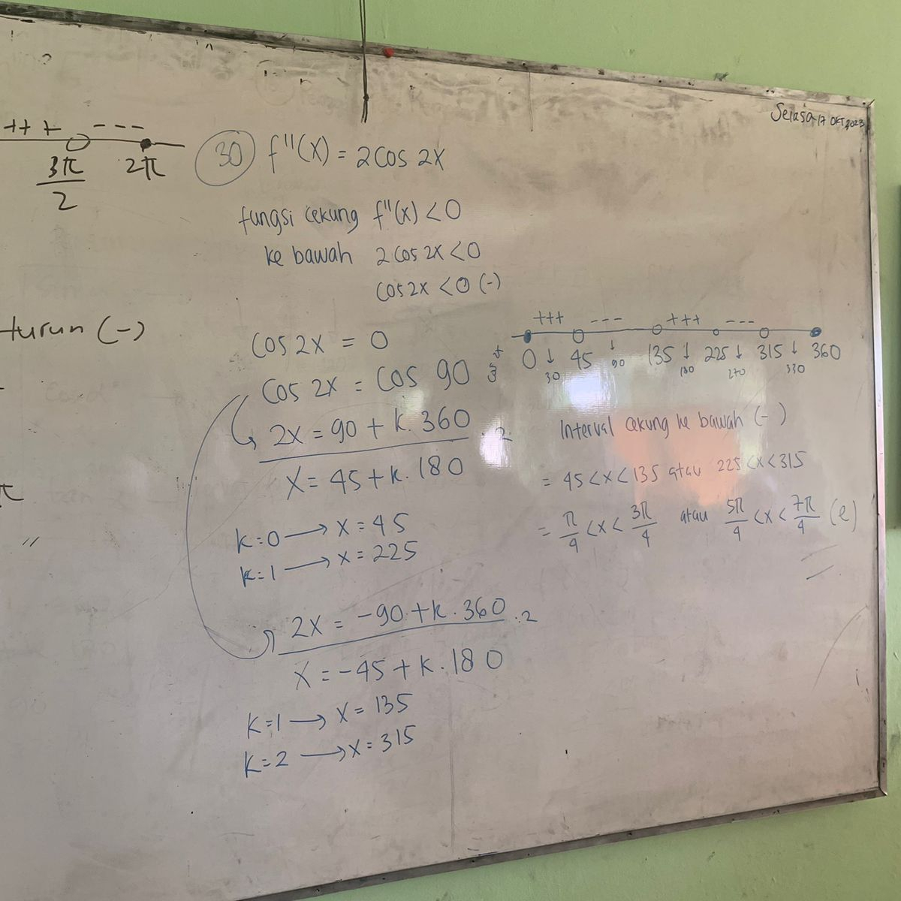
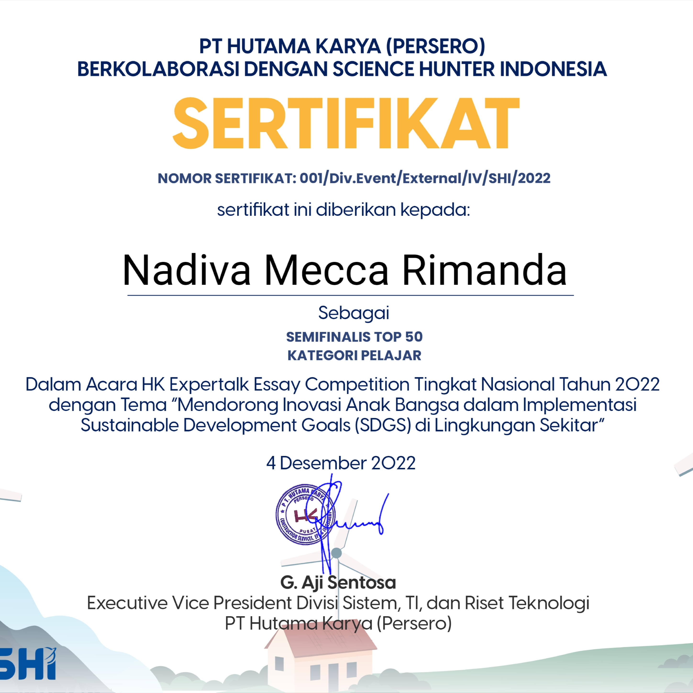
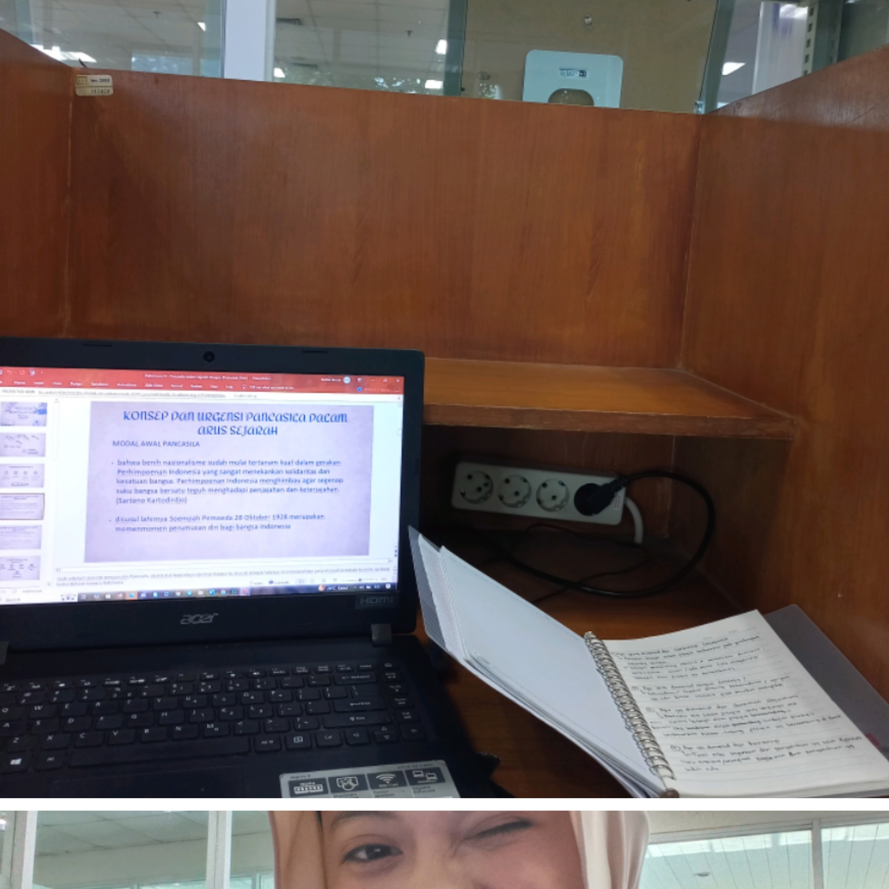
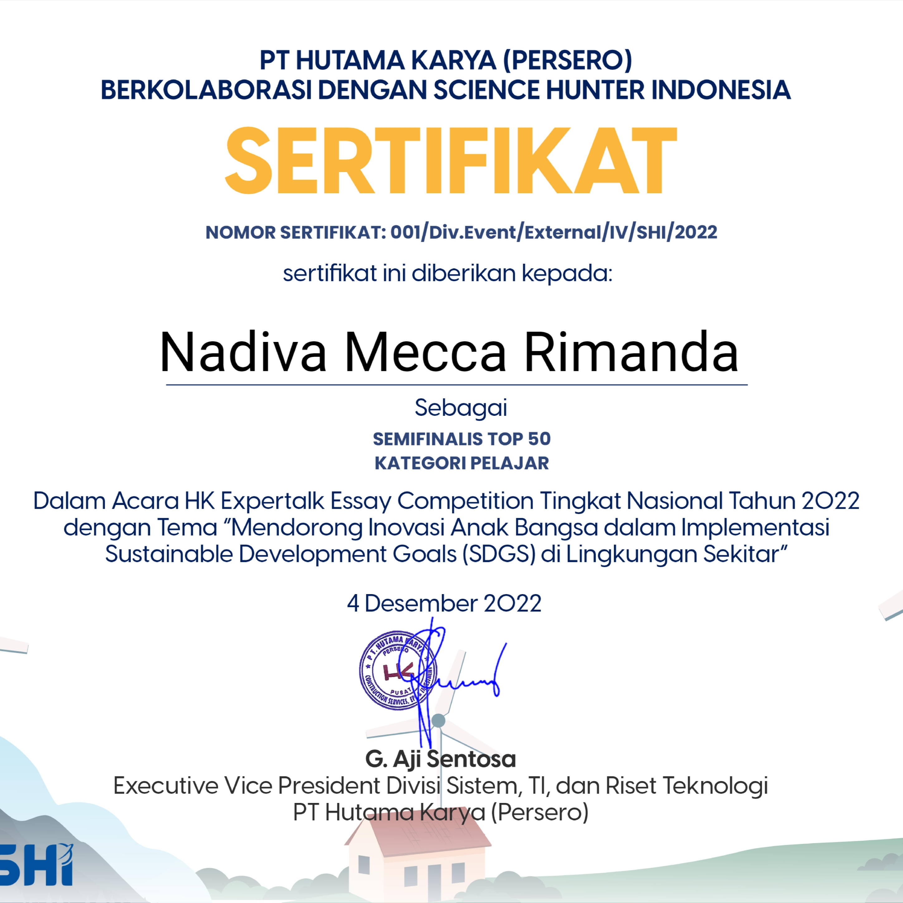
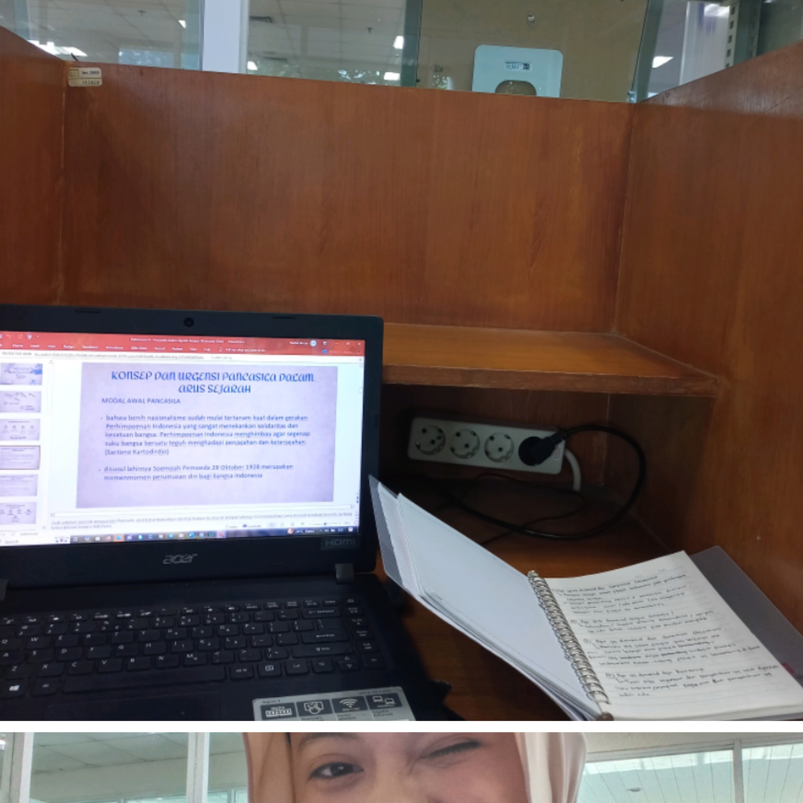

✨HOBI MECCA✨
1. Berkebun di Alam
Memanen sayur mayur di kebun nenek jogja
Memanen buah kakao (cikal bakal cokelat) di kebun nenek lampung
Menjelajahi bukit di jogja
2. Matematika
 

Memenangkan lomba matematika sekolah dasar
Menjadi perwakilan lomba KSM (Kompetisi Sains Madrasah) bidang Matematika
Antusias maju ke papan tulis menulis penyelesaian matematika di kelas waktu sekolah
3. Seni Pertunjukkan
Vokalis utama di grup qasidah waktu SD
Mengikuti ekskul tari tradisional asal aceh: Ratoh Jaroe
Penghargaan Aktris terbaik di Ujian Praktik Drama Bahasa Indonesia
Pembaca puisi di penampilan paduan suara karang taruna malam puncak HUT RI 2024
4. Kegiatan Literasi
 



Salah satu buku yang kubaca (topik filsafat)
Berhasil masuk top 50 lomba Essay tingkat nasional
Menyendiri di perpustakaan adalah hal yang menyenangkan untukku
5. Kepanitiaan & Organisasi
Panitia Karnaval HUT RI 2024 (Karang Taruna)
Panitia Lomba HUT RI 2024 (Karang Taruna)
Panitia KIPGTS PNJ 2025
Panitia Open House PNJ 2025 Perwakilan Jurusan TIK
6. Public Speaking
Presentator Topik KIPK dan Seleksi Masuk Perguruan Tinggi di SMKN 54 Jakarta (KIPGTS 2025)
Presentator Topik KIPK dan Seleksi Masuk Perguruan Tinggi di SMKN 2 Depok (KIPGTS 2025)
Presentator Topik Pengenalan Jurusan TIK di Open House PNJ 2025